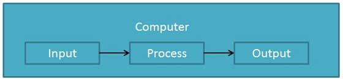

The purpose of this tutorial is to introduce you to Computers and its fundamentals.
Functionalities of a Computer

If we look at it in a very broad sense, any digital computer carries out the following five functions −
Step 1 − Takes data as input.
Step 2 − Stores the data/instructions in its memory and uses them as required.
Step 3 − Processes the data and converts it into useful information.
Step 4 − Generates the output.
Step 5 − Controls all the above four steps.Advantages of Computers
Advantages of computers.
High Speed:-
Computer is a very fast device.
It is capable of performing calculation of very large amount of data.
The computer has units of speed in microsecond, nanosecond, and even the picosecond.
It can perform millions of calculations in a few seconds as compared to man who will spend many months to perform the same task.
Accuracy:-
In addition to being very fast, computers are very accurate.
The calculations are 100% error free.
Computers perform all jobs with 100% accuracy provided that the input is correct.
Storage Capability:-
Memory is a very important characteristic of computers.
A computer has much more storage capacity than human beings.
It can store large amount of data.
It can store any type of data such as images, videos, text, audio, etc.
Diligence:-
Unlike human beings, a computer is free from monotony, tiredness, and lack of concentration
.
It can work continuously without any error and boredom.
It can perform repeated tasks with the same speed and accuracy.
Versatility:-
A computer is a very versatile machine.
A computer is very flexible in performing the jobs to be done.
This machine can be used to solve the problems related to various fields.
At one instance, it may be solving a complex scientific problem and the very next moment it may be playing a card game.
Reliability:-
A computer is a reliable machine.
Modern electronic components have long lives.
Computers are designed to make maintenance easy.
Automation:-
Computer is an automatic machine.
Automation is the ability to perform a given task automatically
Once the computer receives a program i.e., the program is stored in the computer memory, then the program and instruction can control the program execution without human interaction.
Reduction in Paper Work and Cost:-
The use of computers for data processing in an organization leads to reduction in paper work and results in speeding up the process.
As data in electronic files can be retrieved as and when required, the problem of maintenance of large number of paper files gets reduced.
Though the initial investment for installing a computer is high, it substantially reduces the cost of each of its transaction.
Disadvantages of Computers
No I.Q.
A computer is a machine that has no intelligence to perform any task.
Each instruction has to be given to the computer.
A computer cannot take any decision on its own.
Dependency:-
It functions as per the user’s instruction, thus it is fully dependent on humans.
Environment:-
The operating environment of the computer should be dust free and suitable.
No Feeling:-
Computers have no feelings or emotions.
It cannot make judgment based on feeling, taste, experience, and knowledge unlike humans.